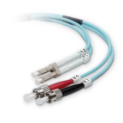

[2] Travessant el vel analògic-digital¶
Enviem i rebem missatges constantment en els nostres àmbits personal, professional i polític. La disponibilitat gairebé instantània de pràcticament qualsevol informació desitjada és una característica clau de l’era actual. Quan fem servir un ordinador de qualsevol mena per compartir o obtenir coneixement, primer cal transformar-lo en dades que puguin entendre tant els humans com els ordinadors. Això es pot imaginar com una seqüència de passos:

Els ordinadors treballen amb dades digitals i les transmeten, és a dir, seqüències binàries de 0 i 1 com a símbols. Tanmateix, la transmissió de dades té lloc en el món real, on 0 i 1 són idees i no objectes tangibles.
Aquest capítol estudia com aquests símbols digitals travessen el vel del món digital al món analògic (físic) en la transmissió, i de tornada de l’analògic al digital en la recepció.
[2.1] Informació ↔ Dades ↔ Missatges binaris¶
El coneixement, la informació i les dades no són el mateix, tot i que sovint s’utilitzen indistintament. En contextos tècnics, cal utilitzar-los i interpretar-los amb precisió.
Exercici 2.1
Suposem que som a l’aire lliure i volem explicar al nostre amic quin temps fa. Tenim coneixement de tot el que està relacionat amb el temps, perquè som allà. Per a la nostra comunicació, ens hem de centrar en una part d’aquest coneixement i decidir quina informació enviem. Per exemple, podríem voler comunicar la temperatura i dir alguna cosa com “la temperatura és d’uns 22ºC”. Hi ha moltes maneres d’emmagatzemar aquesta informació com a dades dins d’un ordinador. El més probable és que representem el nombre \(22\) com a part d’aquestes dades. Com definiries coneixement, informació i dades?
Tot i que hi ha molts tipus de dades, és a dir numèriques, textuals, visuals, científiques, etc., al final totes es representen amb nombres. Per exemple, es podria fer servir la codificació ASCII per representar la cadena “Bobby” com la seqüència següent: \(66, 111, 98, 98, 121\).
Dins d’un ordinador, aquests nombres s’emmagatzemen en registres binaris, p. ex. a la CPU i a la RAM. Tanmateix, hi ha diverses maneres de representar dades numèriques en format binari. Més concretament, hem de parar molta atenció, com a mínim, als aspectes següents sempre que llegim o escrivim dades:
-
enter o amb decimals?
-
profunditat de bits? (p. ex., 8 bits per nombre)
-
amb signe o sense signe?
-
Per a nombres de diversos bytes: big endian o little endian?
-
Per a nombres amb decimals: coma flotant o coma fixa?
Exercici 2.2
Explica com completar la segona fila a partir de la primera (i viceversa), i quines suposicions has de fer en cada cas.
| Nombre | \(7\) | \(2\) | \(-3\) | \(0.75\) | \(260\) | |
|---|---|---|---|---|---|---|
| Binari | 00111 |
00000010 |
1101 |
1100 |
0000 0100 0000 0001 |
I què passa amb à \(\leftrightarrow\) 1100 0011 1010 0000?
De vegades hem d’inspeccionar el contingut d’un registre binari (p. ex., per depurar o amb altres finalitats d’anàlisi) o establir-ne el contingut manualment. Per als humans, és incòmode i molt propens a errors manipular cadenes binàries de més d’uns quants bits. Quan hem d’inspeccionar o modificar el contingut d’un registre binari (p. ex., per depurar), sovint fem servir la base \(16\), és a dir, la notació hexadecimal.
En hexadecimal, hi ha exactament \(16 = 2^4\) dígits diferents (de 0 a 9, de a a f) amb valors decimals de \(0\) a \(15\), cadascun dels quals representa exactament \(4\) bits. Quan escrivim valors hexadecimals per a un ordinador, és a dir, en codi font, els valors hexadecimals normalment van precedits de 0x, p. ex., 0x58a5b0. De manera semblant, les expressions binàries van precedides de 0b, p. ex., 0b0011.
Nota
-
Els espais i fins i tot els salts de línia entre dígits no tenen cap significat; només s’utilitzen per facilitar la inspecció visual.
-
En alguns textos, quan en un context hi ha diverses bases possibles, s’indiquen com a subíndexs, com a
58a5b0\(_\textrm{16}\) i0011\(_\textrm{2}\).
Exercici 2.3
Considera el missatge següent, format per una concatenació d’enters sense signe de 3 bits: a4 3f 20.
-
Quants bits i quants bytes fa?
-
Quins són els cinc primers enters continguts en el missatge?
La majoria de vegades, deixarem que el nostre codi s’encarregui de manipular les dades. Per fer-ho, necessitem operacions a nivell de bits i de lògica booleana com les següents
| Operació | AND (bits) | AND lògica | OR (bits) | OR lògica | Despl. esq. | Despl. dre. |
|---|---|---|---|---|---|---|
| Python | & |
and |
| |
or |
<< |
>> |
Altres eines útils de Python són les funcions bin() i hex(), que converteixen un enter en la seva representació binària i hexadecimal, respectivament, i int(), que pot analitzar una cadena que descriu un nombre i retornar aquest nombre. També podem controlar el format amb què mostrem els nombres, p. ex., print(f'{n:08b}') mostraria el valor de la variable n en forma binària, fent servir com a mínim 8 posicions i omplint amb zeros les posicions buides de l’esquerra (més informació a la documentació de Python).
Exercici 2.4
Considera el codi que es mostra a continuació. Els nombres que s’imprimeixen en executar-lo tenen una importància especial en xarxes i en informàtica. Què tenen en comú? (Pista: potser et convé modificar el codi perquè en mostri les representacions binàries).
snippets/bitwisemanipulation.py
a = 0xff
print(a)
for _ in range(8):
a = (a << 1) & 0xff
print(a)
255
254
252
248
240
224
192
128
0
[2.2] Analògic ↔ Digital¶
Un cop decidim quins bits volem transmetre, hem de trobar una manera de fer que aquests bits arribin a una altra màquina a distància. Primer, hem de decidir quin mitjà fem servir i quines propietats físiques podem controlar i monitorar. Entre les opcions més habituals hi ha fer servir el voltatge en cables de coure, enviar llum per fibra òptica i manipular el camp electromagnètic mitjançant antenes.
Exercici 2.5
Reflexiona:
-
Podem fer un cable de coure tan llarg com vulguem?
-
Quin mitjà fan servir les connexions Wi-Fi?
-
Necessitem fibres òptiques per fer comunicacions basades en la llum?
Si optem per cables de coure, en podem posar diversos en paral·lel i enviar més dades a la mateixa velocitat de rellotge. Això, però, té el preu d’una complexitat i un cost més grans que els dissenys en sèrie. Es poden produir interferències de voltatge a les línies de dades per diversos motius, incloent-hi fenòmens físics com la inducció electromagnètica al cable. Tot i així, els cables que compleixen els estàndards moderns de transmissió de dades (p. ex., IEEE 802.3) sovint fan servir parells trenats de cables i apantallament, entre altres estratègies, per garantir errors de bit per sota d’\(1\) de cada \(10^{12}\) bits.


Alguna vegada t’has capbussat en una piscina, has mirat cap amunt i l’aigua semblava un mirall? Els cables de fibra òptica funcionen gràcies a aquest fenomen, anomenat refracció. La llum que entra a la fibra per un extrem s’hi queda a dins fins que surt per l’altre extrem. El recobriment de la fibra és important per preservar-ne la integritat, però aquest recobriment no participa en el “rebot” de la llum mentre avança per la fibra.
En una fibra òptica monomode, el sensor de l’extrem receptor detecta la presència o l’absència d’un únic rang de longituds d’ona. Aquests cables són relativament prims i barats, però transporten un sol senyal. Una altra opció és transmetre diverses longituds d’ona (p. ex., fent servir diverses fonts làser) alhora, per la mateixa fibra. A l’extrem receptor, es fa servir un prisma per tornar a dividir el feix de llum en els seus components monocromàtics, que es detecten per separat. D’aquesta manera, la fibra òptica multimode permet multiplexar diversos senyals, cosa que augmenta molt la taxa de transmissió efectiva.
Exercici 2.7
Quan un feix de llum entra en una fibra òptica, ho fa amb un cert angle d’incidència. Aquest angle afecta el temps que triga a arribar a l’altre extrem. Si projectem un con de llum, la llum entra a la fibra amb diversos angles d’incidència. Què passa a l’altre extrem si encenem i apaguem aquest con de llum molt ràpidament? És rellevant si fem servir feixos monomode o multimode?



Tot i que hi ha moltes classes d’antenes, la seva finalitat principal és detectar camps electromagnètics i/o crear-ne. L’equació de Maxwell-Faraday ens diu que els canvis en el camp elèctric \(\vec{E}\) creen un camp magnètic perpendicular \(\vec{B}\), i a l’inrevés.
Una antena de dipol com la de la dreta aprofita aquest concepte aplicant un voltatge altern \(V\), que genera ones electromagnètiques que es propaguen cap a fora de l’eix del dipol.
Nota
Quan emetem una certa energia \(E\) des d’un punt en totes direccions, aquesta energia es distribueix al voltant d’una esfera creixent. Com que l’àrea d’una esfera de radi \(r\) és \(4 \pi r^2\), la quantitat d’energia que arriba a un punt a distància \(r\) serà de l’ordre de magnitud de \(E / r^2\).
Això de vegades s’anomena llei de l’invers del quadrat, i és el motiu pel qual els corrents induïts a l’antena del receptor solen estar entre els nanovolts (\(10^{-9}\) V) i els picovolts (\(10^{-12}\) V). Sorprenentment, això és suficient perquè els detectors moderns llegeixin el senyal de dades.

Independentment del mètode triat perquè les dades viatgin, cal travessar igualment el vel entre els senyals analògics i les dades digitals. Una manera de fer-ho és la modulació: es genera un senyal sinusoïdal de base anomenat portadora, i les dades es codifiquen modificant aquesta portadora. Per exemple, es pot canviar l’amplitud de la portadora (ASK), la seva freqüència (FSK), o fins i tot l’amplitud i la fase alhora (QAM).
Exercici 2.8
La figura anterior mostra un exemple de modulació d’amplitud i un de modulació de freqüència. Quin és quin? Per a cada cas: aquesta modulació transmet un senyal analògic o digital?
Exercici 2.9
Quina és la diferència entre amplada de banda i velocitat de transmissió? Per què creus que s’utilitzen indistintament en contextos no tècnics?